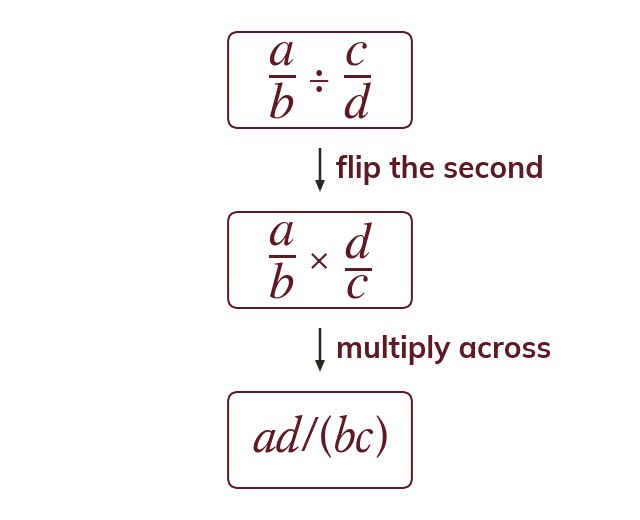
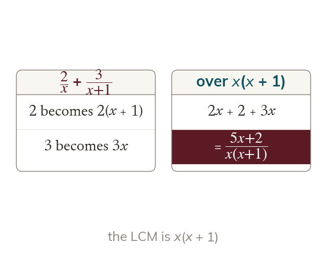
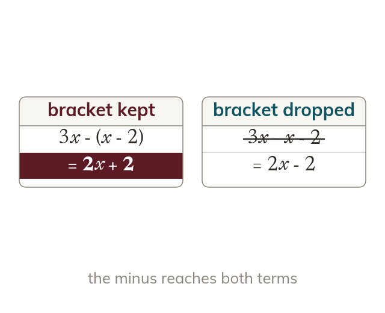

Factorise, then cancel
Algebraic fractions cancel only common factors. So the top and bottom are factorised first.
Algebraic fractions obey exactly the rules of number fractions, and the most common mistake in the whole chapter is cancelling a term instead of a factor - factorise first, and only then is anything allowed to cancel.
Work down the page at your own pace. Write every answer in your book first, then click to check it.
Read each card, then follow the worked examples one step at a time.
Algebraic fractions cancel only common factors. So the top and bottom are factorised first.

Fractions multiply straight across, after cancelling. Dividing means multiplying by the flipped second fraction.
Pick an answer. If it's wrong, the feedback tells you which mistake it was.
Section 2.3 Simplifying algebraic fractions (p35-37): simplifying, factorising first, and multiplying and dividing pairs of fractions.
Read each card, then follow the worked examples one step at a time.

Adding or subtracting needs a common denominator, the LCM. Each numerator is multiplied by what its denominator was missing.

A subtracted numerator keeps its bracket. So -(x - 2) becomes -x + 2.
Pick an answer. If it's wrong, the feedback tells you which mistake it was.
Section 2.3 Simplifying algebraic fractions (p35-37): adding and subtracting with linear and quadratic denominators.
Finished? Next lesson: 2.4-2.5 Fractional Equations and Completing the Square.
Log in, then search for a code to practise that skill.